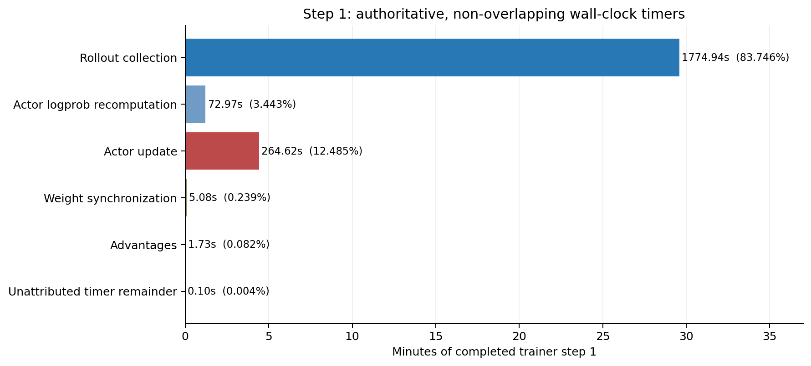
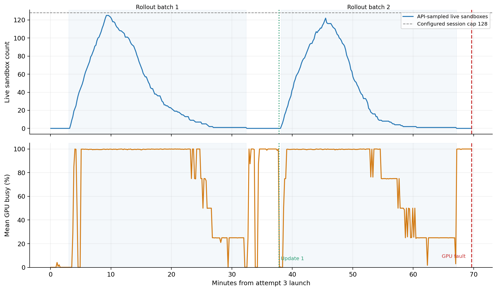
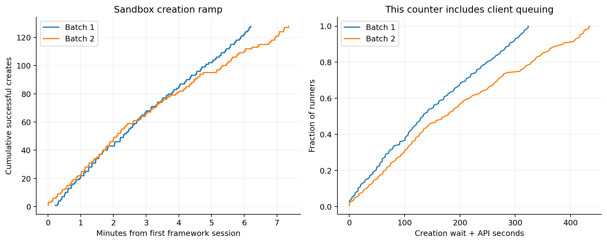
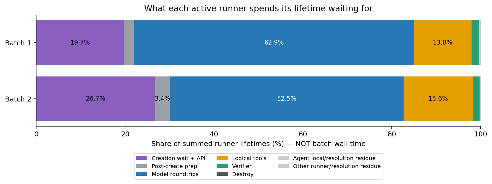
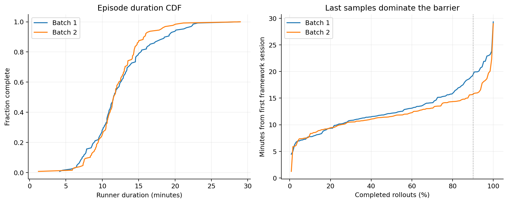
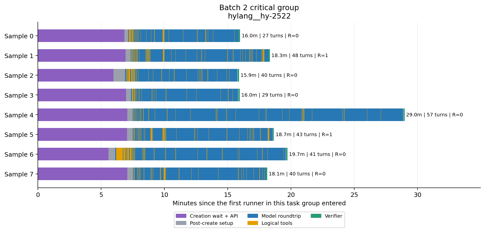
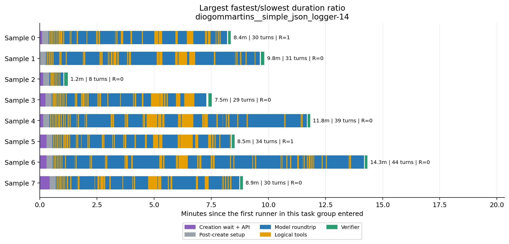
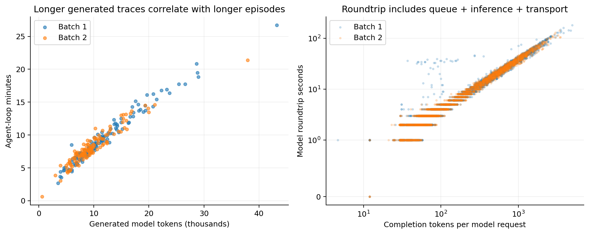

Uni-Agent SWE任务RL：基础设施耗时与瓶颈分析
本报告分析2026-09-20这次3-step基础实验。实际完成1次optimizer更新、两批共256条rollout；第2步训练计算被GPU不可纠正错误中断，第3步未启动，也没有保存新的模型checkpoint。 训练数据来自SWE-reBench，本次没有跑500题SWE-bench Verified评测。
这里把“一道题的8次独立尝试”称为一个题组，每次尝试称为一条rollout/sample。每批16个题组，n=8，共128条；它们各自使用独立sandbox。
1. 最值得关注的结论
- rollout是完整训练step的主要耗时。 第1步共35.32分钟，其中rollout收集29.58分钟，占83.7%；actor更新4.41分钟，占约12.5%。
- 启动慢主要不能解释为“E2B boot要几分钟”。 创建计时包含客户端排队；3个创建名额直到就绪探测和tmux准备结束才释放。创建成功后的工作，就占掉了启动阶段至少91.1%和92.0%的这3个名额容量。
- 长尾比平均耗时更决定整批结束时间。 两批在90%样本完成后，还分别等待9.44和13.08分钟，占整批约32%和45%；最后一个sample单独增加了5.53和6.61分钟等待。
- verifier不是这次主要长尾。 平均11.88秒，P95为26.88秒，最长48.83秒。两批最后结束的sample，verifier分别只用了15.73和6.35秒。
- 工具接口存在明显的细粒度RPC开销。 9,950次逻辑工具调用对应44,645次agent阶段的已记录RPC，平均4.49次RPC/工具动作。
cat、test、tmux占了大量调用。
- 首要阻塞仍是稳定性。 硬件/驱动事件使已更新但未checkpoint的权重丢失。应先处理GPU/XGMI稳定性，再比较吞吐优化。
可打开8-sample交互查看器，按题目和耗时口径查看每组8个sample。原始抽取结果见256条明细和32个题组。
2. 配置、范围与计时口径
模型为Qwen/Qwen3-Coder-30B-A3B-Instruct，单机8张MI350X；采用colocate_async、GRPO advantage / GSPO loss、R3 Router Replay。Actor为TP1/PP1/CP4/EP8，vLLM为4个TP2副本，两者复用同一组GPU。每批16题×8次尝试；Agent预算131,072 token、最多200轮。
自建E2B地址为10.145.64.67:8088，用户提供的配置为192 CPU、1 TB内存、配额512；每个任务sandbox配置4 vCPU和8 GiB。客户端限制为128个session、3个创建/就绪/依赖准备名额，以及16个已记录exec调用名额。后两个限制不能与sandbox存活上限混为一谈。
实例配额与计算容量要分开看。 128个环境按上述配置合计512 vCPU、1,024 GiB（1 TiB）：vCPU数为192个宿主CPU的2.67倍，内存配置总额也大致相当于整机容量，还没有扣除宿主与服务开销，且“1 TB”的单位口径未确认。这是guest配置总额，不是实测CPU需求或驻留内存。128实例验收通过证明平台能接纳并操作这些实例；是否能同时承受持续满负载，还需要CPU、内存压力和磁盘监控。本次数据既不能证明资源完全无争用，也不能证明这些配置已经造成资源瓶颈。
由于新模板构建服务出错，本次保留了完整1,150题文件，但把已有可用模板的题目排在前面，准备48题，实际用了前32题。warmup prefetch=0，并限制最多提交48题。因此本次能验证colocate闭环，但不能代表官方充分异步、partial-rollout的最佳吞吐。
本报告严格区分三种时间：
- 训练step墙钟时间：第1步完整timer，用来回答training与rollout各占多少。
- 批次观测时间：最早framework session打开，到最后一个观测结果结束；用来分析启动、长尾和GPU使用情况。它与trainer的
gen timer有少量边界差异。
- 并行任务累计时间：把256条runner或sandbox时间相加，用来分析累计占用。它可以达到几十小时，不能再加到训练step的墙钟时间上。
结构化event、runner、verifier timer有亚秒精度；模型请求和逻辑工具时间来自秒级日志标记，端点各自有取整误差，所以其占比是近似拆解。未获得E2B服务端boot分段、纯GPU排队/prefill/decode分段、服务器CPU/RAM利用率和checkpoint写入耗时。
3. 第1个训练step的耗时占比
| Component |
Seconds |
Share of step 1 |
| Rollout collection |
1,774.94 |
83.746% |
| Actor logprob recomputation |
72.97 |
3.443% |
| Actor update |
264.62 |
12.485% |
| Weight synchronization |
5.08 |
0.239% |
| Advantages |
1.73 |
0.082% |
| Unattributed timer remainder |
0.10 |
0.004% |

第1步的完整墙钟计时；各项互不重复，可以相加。
gen包含任务分发、等待环境、Agent多轮交互、verifier及轨迹交付等工作，不能把它理解为纯GPU生成时间。表中很小的剩余项仅表示没有落进这些timer的时间，不代表所有调度开销都只有这么少。
第2批rollout虽然完成，但第2步训练计算在结束前被打断，不能给第2步编造完整training占比，也不能把未记录的部分当成0秒。
4. rollout过程：启动爬坡、收尾与GPU利用率
| Metric |
Batch 1 |
Batch 2 |
| Prompt groups × n |
16 × 8 |
16 × 8 |
| Completed / resolved |
128 / 26 |
128 / 32 |
| Observed cohort span, min |
29.35 |
28.99 |
| Event-reconstructed peak live |
126 |
122 |
| 10-second API sampled peak live |
125 |
122 |
| Mean live sandboxes |
43.43 |
38.83 |
| Mean reported GPU busy |
77.37% |
71.93% |
| Time with mean GPU busy <50%, min |
7.14 |
8.32 |
| Model-generated tokens |
1,507,570 |
1,252,000 |
| Generated tokens / observed cohort second, all GPUs |
856.02 |
719.85 |

蓝色区域对应rollout批次；绿色线是第1次更新完成；红线是GPU故障。
从客户端事件重建，训练中sandbox峰值为126和122；10秒一次API采样看到125和122。独立容量验收则确实让128个sandbox同时存活并完成检查。训练没一直占满128，不等于E2B只能承载这些数量：样本会在创建尚未全部结束时提前完成，后段又逐渐退出。
平均存活约43和39个，是整个批次时间上的平均值，包含启动和长尾。它是“存活slot占用”，不是CPU利用率。也不能据此断言把并发降到64就不会影响性能。
这次关闭了未来批次预取。一个batch的16个题组都要返回，才进入更新；已经结束的sample释放了sandbox，但下一批还没有填入。因此后段常只剩少数任务、只有部分vLLM副本工作。第1步记录的policy staleness为0，也与这一调度方式一致。
5. 起sandbox最初为什么慢
| Metric |
Batch 1 |
Batch 2 |
| First-to-last successful create, s |
358.88 |
440.51 |
| Last create after cohort session-open, s |
372.11 |
441.12 |
| Observed creation slope, instances/s |
0.354 |
0.288 |
| Creation wait + API P50, s |
133.79 |
175.68 |
| Post-create work still inside create gate, mean s |
7.76 |
9.54 |
| Of that: cached tmux provisioning, mean s |
2.35 |
2.91 |
| Of that: readiness/probes/other, mean s |
5.41 |
6.63 |
| Lower bound: gate capacity occupied AFTER create success |
91.1% |
92.0% |
| Dispatch/import log upper-bound median, s |
35.45 |
0.049 |

注意右图是客户端排队＋create API，并非服务端纯启动时间。
256次创建计时的中位数149.12秒、P95为385.81秒、最大434.11秒。源码表明timer在等待创建semaphore之前启动，所以这些数值包含等待名额的时间。
本次名额的实际占用范围是：
等待3个创建名额之一
→ E2B create
→ /bin/true就绪检查
→ command -v tmux、读取OS信息
→ 上传缓存包、dpkg安装、tmux检查
→ 释放创建名额
每批最前面的3个create计时只有约0.41–0.72秒、0.58–0.63秒。这说明后续几分钟计时不能直接归因于E2B API，但这几个数据点也不足以代表服务端boot分布；API返回后，执行通道还可能需要就绪时间。
create成功后仍占着名额的工作，平均7.76和9.54秒。其中明确计时的缓存包上传/安装平均2.35和2.91秒，其余5.41和6.63秒是就绪检查、探测、OS读取等路径。只累计“create返回到工具准备完成”这一确定占着名额的区间，就已消耗启动窗口中3个名额容量的至少91.1%和92.0%；这个结论不需要猜测未记录的API请求开始时刻。
另一个成本来自runner冷启动：首批framework到runner入口的日志差，中位数约35.45秒，最大268秒；第二批中位数变成亚秒，日志给出的上界约0.049秒。这项包含Ray调度、进程启动/import和入口开销，不能全部叫作Ray排队。第二批创建爬坡仍更慢，说明只解决worker冷启动还不够。
优先方案是修好模板构建，把tmux等工具预装进模板，再把“create API并发”和“就绪/依赖准备并发”分开控制。不能直接无限放开：首次容量检查出现过连接重置，后续成功的复查同时调整了就绪探测和命令突发并发，尚未隔离单一根因。
6. 一条runner的时间花在哪里
| Runner component |
Cumulative hours |
Share of summed runner lifetimes |
| Creation wait + API |
12.06 |
23.15% |
| Post-create prep |
1.49 |
2.87% |
| Model roundtrips |
30.12 |
57.82% |
| Logical tools |
7.43 |
14.27% |
| Verifier |
0.84 |
1.62% |
| Destroy |
0.00 |
0.00% |
| Agent local/resolution residue |
0.07 |
0.14% |
| Other runner/resolution residue |
0.07 |
0.13% |

累计并行时间占比，分母不是训练step墙钟时间。
| Component |
Mean s |
P50 s |
P95 s |
Max s |
| Runner total |
732.52 |
693.57 |
1,173.42 |
1,739.18 |
| Creation wait + API |
169.54 |
149.12 |
385.81 |
434.11 |
| Post-create preparation |
21.02 |
17.61 |
53.30 |
80.88 |
| Model roundtrips per runner |
423.53 |
374.00 |
794.75 |
1,472.00 |
| Logical tools per runner |
104.55 |
104.50 |
173.75 |
264.00 |
| Verifier |
11.88 |
8.72 |
26.88 |
48.83 |
| Destroy acknowledgement |
0.012 |
0.011 |
0.013 |
0.047 |
256条runner累计约52.09小时，sandbox成功创建至销毁确认累计约40.01小时。等待模型响应的区间覆盖了约75.3%的sandbox存活时间，以及80.0%的Agent-loop时间。这说明状态化sandbox常常要在等待模型时继续存在；不能把75.3%直接当成CPU空闲率，因为可能存在后台进程，而且没有服务端CPU指标。
“post-create准备”已包括就绪、工具、Git历史清理和shell初始化；tmux安装是它的子项，不能再重复相加。销毁平均约11.6毫秒，是客户端API确认时间，并不等于测量了服务端物理资源回收全过程。
7. 同一道题的8个sample差异与长尾
| Tail measure |
Batch 1 |
Batch 2 |
| After 90% complete: remaining min |
9.44 |
13.08 |
| After 90% complete: share of cohort time |
32.2% |
45.1% |
| Mean GPU busy in that tail |
45.41% |
43.14% |
| After 95% complete: remaining min |
7.43 |
10.86 |
| Last one sample alone adds, min |
5.53 |
6.61 |
| Critical task |
agronholm__anyio-639 |
hylang__hy-2522 |
| Critical sample verifier, s |
15.73 |
6.35 |

90%完成点按nearest-rank取116/128；曲线末端直接影响整批结束。
32个题组中，最慢/最快耗时比中位数1.69倍，最大11.72倍；最慢/组内中位数的比值中位数为1.31倍。题组需要等待8次尝试中最慢的一个，而本次全批barrier又要等待128次尝试中最慢的一个。
这说明长尾代价，但不能仅凭这次数据断言固定128条rollout时n=4一定比n=8快：n变了，题目数、难度混合、组内奖励信号和调度都会变，需要对照实验。

32道题全部8次尝试的耗时；星号表示reward=1。
AnyIO：第1批的关键长尾
同题最快8.75分钟，最慢28.84分钟。最慢sample进行了110轮，生成43,223 token；最快进行了41轮，生成7,326 token。最慢sample里，等待模型累计1,472秒，工具128秒，verifier仅15.73秒。
| Sample |
Total min |
Create+wait s |
Model min |
Tools s |
Verifier s |
Turns |
Generated tokens |
R |
| 0 |
9.98 |
100.95 |
6.05 |
104 |
18.96 |
46 |
8,997 |
1 |
| 1 |
18.47 |
106.82 |
13.85 |
142 |
15.77 |
78 |
20,819 |
0 |
| 2 |
28.84 |
101.40 |
24.53 |
128 |
15.73 |
110 |
43,223 |
0 |
| 3 |
11.69 |
108.67 |
8.15 |
74 |
17.56 |
35 |
12,447 |
0 |
| 4 |
11.55 |
114.02 |
7.58 |
93 |
17.96 |
40 |
11,422 |
0 |
| 5 |
12.90 |
121.16 |
8.55 |
107 |
18.07 |
42 |
12,620 |
0 |
| 6 |
16.08 |
111.18 |
12.37 |
81 |
16.71 |
47 |
19,358 |
0 |
| 7 |
8.75 |
114.55 |
4.72 |
95 |
18.74 |
41 |
7,326 |
0 |

同题8次尝试的真实时间线，能看出各自不同的模型与工具路径。
Hy：第2批最后结束的sample
最快15.90分钟，最慢28.99分钟；生成token分别为12,324和37,973。最慢sample有424.12秒创建排队＋API时间、1,235秒模型响应等待、47秒逻辑工具时间，verifier仅6.35秒。它比整批倒数第二个结束的sample晚了6.61分钟。
| Sample |
Total min |
Create+wait s |
Model min |
Tools s |
Verifier s |
Turns |
Generated tokens |
R |
| 0 |
15.98 |
409.76 |
7.90 |
48 |
6.92 |
27 |
12,402 |
0 |
| 1 |
18.33 |
415.42 |
9.73 |
69 |
6.22 |
48 |
15,986 |
1 |
| 2 |
15.90 |
358.64 |
7.97 |
55 |
6.81 |
40 |
12,324 |
0 |
| 3 |
15.96 |
417.72 |
7.92 |
32 |
7.11 |
29 |
11,545 |
0 |
| 4 |
28.99 |
424.12 |
20.58 |
47 |
6.35 |
57 |
37,973 |
0 |
| 5 |
18.66 |
422.91 |
10.03 |
62 |
4.22 |
43 |
15,535 |
1 |
| 6 |
19.72 |
335.40 |
11.93 |
93 |
6.52 |
41 |
19,971 |
0 |
| 7 |
18.12 |
424.26 |
9.72 |
46 |
6.67 |
40 |
14,890 |
0 |

Hy样本既受启动排队影响，也受生成路径长度影响。
simple_json_logger：最大11.72倍差异
最快sample只用了73.41秒、8轮、601个生成token；最慢用了860.08秒、44轮、16,864个生成token。不过它并不是整批最后结束的任务。“组内相对差异最大”与“决定batch结束时间”不是同一件事。

极端组内差异的例子；完整数值可在交互查看器中选择该题。
groups.csv还给出了各sample完成后到组内最慢sample结束的等待等价值。它只是诊断性的slot-seconds，不能算作额外sandbox占用或GPU空闲：那些sample完成时环境已经销毁。
8. n=8的成本是否都产生奖励学习信号
32组中有9组的8次reward完全相同，共72条rollout。这9组占约25.7%的累计runner时间、25.5%的生成token；其中9组全0、0组全1。
对组内归一化的GRPO来说，同组reward完全相同会得到0的奖励差异advantage。这能帮助评估采样成本，但不能事后因为结果差就删除长样本：采样前不知道它们的reward，组过滤也会改变训练分布并增加补采量。后续可比较固定128session预算下的n=4/B=32与n=8/B=16，同时衡量组内reward方差、补采成本和训练质量。
9. verifier、RPC以及实际timeout
所有256次评测都有可解析结果，没有记录到verifier超时；最长48.83秒，低于600秒限制。verifier累计50.68分钟是并行累计值，不能加到两批墙钟时间上。它只占累计runner时间1.62%；两条关键长尾中分别只占15.73和6.35秒。
verifier timer覆盖exec名额等待、SDK/传输和执行；内层exec timer在拿到名额后才开始。二者差值只能称为gate/wrapper开销，不能直接当成服务端计算时间。评测脚本正常结束也不意味着修复成功：两批总共58/256次通过了测试。
| Logical tool |
Calls |
Mean s |
P50 s |
P95 s |
P99 s |
Max s |
| shell |
4,791 |
3.36 |
2.00 |
8.00 |
28.00 |
138.00 |
| str_replace_editor |
4,923 |
2.16 |
1.00 |
6.00 |
19.00 |
31.00 |
| submit |
236 |
0.00 |
0.00 |
0.00 |
0.00 |
0.00 |
| Instrumented operation |
Calls |
Mean s |
P50 s |
P95 s |
| exec/agent |
34,403 |
0.4556 |
0.2897 |
0.8298 |
| exec/setup_or_cleanup |
2,329 |
0.9559 |
0.4960 |
2.0374 |
| exec/verifier |
256 |
11.7872 |
8.6475 |
26.7475 |
| file_read/agent |
3,219 |
0.0093 |
0.0080 |
0.0164 |
| file_write/agent |
7,023 |
0.0166 |
0.0059 |
0.0124 |
| file_write/setup_or_cleanup |
512 |
0.0065 |
0.0058 |
0.0098 |
当前provider没有提供native persistent-shell接口，所以stateful_shell回退到tmux-over-exec：写命令文件、发送tmux指令、轮询exit-code文件、必要时等待信号、再读stdout/stderr。文件编辑也会做多次存在性检查。
36,988次exec里，cat为16,052次、test为12,462次、tmux为6,073次；agent阶段96.7%的exec短于1秒。对比之下，直接文件读取平均约9ms、写入约17ms，而agent exec中位数约290ms。这支持优化控制RPC数量或native shell路径，而不是只优化文件payload传输。
exec gate确实到过16并发，分别满载约291.8和349.3秒，占各自批次约16.6%和20.1%；但平均只使用了16个名额容量的37.1%和37.6%。它可能产生突发排队，并非整个batch一直饱和。直接就绪/依赖准备调用和文件API不属于这个exec gate统计。

verifier耗时分布与低层RPC数量构成。
正式运行只观测到两类逻辑工具问题：
- Shopify某个sample执行的
find -exec grep缺少{}文件占位符，导致grep读取标准输入，符合等待输入的超时表现。命令上限120秒，完整逻辑调用耗时138秒，包含轮询、中断和读取输出。agent随后继续完成；它不是batch长尾。
- Watchdog某个sample向shell工具多传了一个不支持的
shell参数，被参数校验拒绝；随后修正调用。该操作的日志耗时低于1秒分辨率。
正式attempt没有记录到E2B传输错误事件或模型客户端重试warning。先前容量检查的2次connection reset，以及初始化时租期配置被API拒绝，属于不同阶段，不能混在一起。低层exec共有7,530次非零退出码，也不能作为基础设施失败数：test、轮询结果文件的cat等经常正常返回非零。
所有256个Agent最终都返回finished=True，没有耗尽200轮或128K预算。最大实际Agent轮数110，最大最后一次上下文＋输出122,743 token。
10. 模型等待与指标误读

图中是描述性关联；没有分离GPU排队、prefill、decode与传输。
总计9,970次完成的Agent模型查询，生成2,759,570 token，与轨迹mask标记的模型token逐条相等。API输入prompt累计200,993,200 token，因为多轮请求反复携带历史；它不能等同于GPU实际重算了2亿token，prefix-cache命中没有被记录。
单次模型查询往返平均10.88秒，P50为3秒、P95为45秒、P99为76秒，最长180秒；单次输出为7–4,972 token，中位数75。长请求并不自动等于infra timeout：这些请求均完成了，且输出长度和历史上下文各不相同。往返时间混合了客户端处理、服务排队、推理和传输，下一次需要分别记录这些分段，才能判断增加推理容量、改善cache或降低RPC延迟哪个更有效。
同题组内去均值后，Agent耗时与生成token数量的Pearson相关系数约0.976；跨全部样本，runner耗时与生成token的Spearman相关系数约0.779。生成工作量能解释很多时间差异，但这不是隔离变量后的因果测量。
三个指标尤其容易误读：
perf/throughput=267.19是轨迹总token数除以step时间再除8张卡，不是decode TPS。轨迹response长度也包含工具观测和多轮历史。- 当前V1在统计前把变长tensor补齐到batch最大长度，
clip_ratio是与这个padding最大值比较。第1步的response_length/clip_ratio=1/128与prompt_length/clip_ratio=8/128，不能单独证明撞到了配置上限。
- Gateway的
num_turns统计user/assistant消息再加1，本次每条都比实际Agent查询次数多2。因此trainer里的最大112，与Agent日志最大110对应，并不是多做了两次模型调用。
11. 基础设施问题与恢复代价
新模板导入在E2B环境初始化阶段返回内部错误，最小的“只导入镜像”复查也失败；精确的服务端根因没有确定。因此本次使用已有模板，不能据此声称完整1150题的任意新镜像构建链路已经跑通。
开始时训练配置请求7200秒租期，被E2B的1小时限制拒绝。失败补采进一步走到未准备的题目才出现映射报错，所以映射报错是次生现象。最终按3600秒创建，并用正式解析后的Task配置做实际启动检查，同时加了48题提交上限。这个案例说明：只测“能创建一个sandbox”或“配额够128”还不够，预检参数必须与最终配置一致。
最严重的问题发生在09:52:53 UTC附近：内核报告0000:66:00.0不可纠正ATHUB事件，0000:96:00.0同期出现XGMI可纠正错误；随后ROCm报告GPU Hang，驱动自动重置全部8卡并明确记录VRAM丢失。日志只能支持硬件/驱动层故障这一结论，不能凭此断言具体坏件、固件缺陷或某条性能warning就是根因。
第1步确实更新了模型：梯度0.084919，8个rank成功，参数抽样有1,149/131,072个元素变化，更新后的模型还执行了第二批rollout。但因为只计划第3步保存，没有可恢复的新checkpoint。本次有效运行尝试约69.75分钟的状态都无法从训练checkpoint继续；现有指标和轨迹仍可分析。checkpoint写入开销本次没有测到，不能猜一个百分比。
故障发生时第二批sandbox已经销毁，所以故障后残留为零，并不证明在rollout中途SIGABRT也一定能自动清理干净。Python的finally没有在这次abort后完整执行；独立于训练进程的run-ID/lease清理器和heartbeat记录更可靠。部分CPU协调/runner进程也收到ROCm硬件异常，说明故障域存在耦合，后续可检查能否让纯CPU控制面尽量不初始化GPU runtime。
12. 建议的优化顺序与验证方法
| 优先级 |
建议 |
为什么优先 |
应测什么 |
| P0 |
排查GPU/XGMI，做持续负载稳定性验证 |
不可纠正事件导致显存和未保存状态丢失 |
代表性长负载、内核/RAS记录、无自动reset；短预检通过不能当成已修复 |
| P0 |
修复新模板构建 |
已有模板绕过了问题，尚不能覆盖完整recipe部署 |
新镜像build、base/reference评测、固定digest |
| P1 |
预装工具，拆分创建与就绪gate |
91–92%的创建名额容量被返回后的工作占用 |
当前方案/预装/分gate对照；爬坡、首次模型请求、错误率、并发和清理 |
| P1 |
准备足够模板后恢复受支持的prefetch/partial rollout |
90%完成后仍占32–45%时间 |
调整48题guard与收尾逻辑；测消耗的数据、staleness、吞吐、reward、取消/残留 |
| P1 |
稳定性阶段每step保存，只留最新 |
已完成的1步权重丢失 |
实测写入秒数/字节数与可恢复性，不预估免费保存 |
| P1 |
独立清理与心跳 |
SIGABRT会绕过finally |
隔离测试中途故障；只清本run实例；验证无孤儿租期 |
| P2 |
native shell或批量控制RPC |
逻辑工具被放大为4.49次RPC |
保持cwd/env/输出/中断语义，对照相同工具工作负载与最终评分 |
| P2 |
稳定后做kernel/graph分析 |
actor MFU约6.86%，有通用fallback和重编译 |
受控数值检查和端到端时间，不凭warning文字推断提速幅度 |
| P2 |
固定session预算比较n/B组合或group filtering |
9个同reward题组占约四分之一成本 |
多次重复、reward方差、补采成本、策略陈旧度与训练质量 |
当前最有证据支持的性能方向是启动门控和rollout调度。优先优化平均12秒的verifier，很难消除已经观测到的几分钟长尾。
附录：全部32个题组
下表耗时来自runner入口到返回，包含创建排队；不是从统一batch时刻开始计时。
| Batch |
Task |
R=1 /8 |
Fastest min |
Median min |
Slowest min |
Max/min |
Max/median |
| 1 |
ARMmbed__mbed-tools-208 |
1/8 |
4.15 |
7.55 |
9.83 |
2.37× |
1.30× |
| 1 |
DavidVujic__python-polylith-232 |
0/8 |
7.76 |
9.81 |
12.93 |
1.67× |
1.32× |
| 1 |
JelleZijlstra__ast_decompiler-34 |
0/8 |
9.50 |
14.29 |
21.57 |
2.27× |
1.51× |
| 1 |
Materials-Consortia__optimade-python-tools-2250 |
0/8 |
7.49 |
10.63 |
12.67 |
1.69× |
1.19× |
| 1 |
PennyLaneAI__pennylane-3057 |
0/8 |
4.55 |
7.14 |
13.60 |
2.99× |
1.91× |
| 1 |
Shopify__shopify_python_api-363 |
1/8 |
5.70 |
7.54 |
10.30 |
1.81× |
1.37× |
| 1 |
agronholm__anyio-639 |
1/8 |
8.75 |
12.29 |
28.84 |
3.29× |
2.35× |
| 1 |
agronholm__sqlacodegen-371 |
3/8 |
7.07 |
11.72 |
15.20 |
2.15× |
1.30× |
| 1 |
alecthomas__voluptuous-380 |
2/8 |
11.21 |
15.51 |
22.40 |
2.00× |
1.44× |
| 1 |
altair-viz__altair-1587 |
7/8 |
10.10 |
11.72 |
18.02 |
1.79× |
1.54× |
| 1 |
asottile__pyupgrade-146 |
2/8 |
8.61 |
10.83 |
13.03 |
1.51× |
1.20× |
| 1 |
asottile__yesqa-69 |
3/8 |
11.49 |
16.34 |
23.12 |
2.01× |
1.42× |
| 1 |
astamminger__zotero-bibtize-19 |
1/8 |
13.77 |
18.42 |
22.47 |
1.63× |
1.22× |
| 1 |
astropy__specutils-1158 |
3/8 |
10.12 |
11.43 |
13.16 |
1.30× |
1.15× |
| 1 |
caronc__apprise-1128 |
0/8 |
11.18 |
12.34 |
13.41 |
1.20× |
1.09× |
| 1 |
desihub__desiutil-173 |
2/8 |
13.37 |
15.39 |
20.13 |
1.50× |
1.31× |
| 2 |
diogommartins__simple_json_logger-14 |
2/8 |
1.22 |
8.70 |
14.33 |
11.72× |
1.65× |
| 2 |
discos__simulators-307 |
3/8 |
7.46 |
11.18 |
14.28 |
1.91× |
1.28× |
| 2 |
dpkp__kafka-python-2573 |
2/8 |
7.35 |
9.33 |
13.47 |
1.83× |
1.44× |
| 2 |
dwavesystems__dwave-cloud-client-417 |
1/8 |
10.53 |
11.45 |
15.00 |
1.42× |
1.31× |
| 2 |
elastic__rally-557 |
0/8 |
5.88 |
7.15 |
9.92 |
1.69× |
1.39× |
| 2 |
encode__httpx-861 |
1/8 |
7.50 |
10.86 |
16.57 |
2.21× |
1.53× |
| 2 |
eyeseast__python-frontmatter-31 |
0/8 |
9.18 |
10.72 |
11.30 |
1.23× |
1.05× |
| 2 |
google__cloud-forensics-utils-335 |
2/8 |
9.48 |
10.60 |
13.02 |
1.37× |
1.23× |
| 2 |
googleapis__python-bigquery-1930 |
0/8 |
8.54 |
11.00 |
13.51 |
1.58× |
1.23× |
| 2 |
gorakhargosh__watchdog-530 |
4/8 |
8.36 |
10.58 |
11.84 |
1.42× |
1.12× |
| 2 |
hgrecco__pint-1476 |
0/8 |
14.36 |
15.62 |
21.16 |
1.47× |
1.35× |
| 2 |
hylang__hy-2522 |
2/8 |
15.90 |
18.23 |
28.99 |
1.82× |
1.59× |
| 2 |
ianlini__flatten-dict-13 |
6/8 |
11.80 |
13.77 |
14.31 |
1.21× |
1.04× |
| 2 |
ipython__ipython-12144 |
2/8 |
11.43 |
12.56 |
14.38 |
1.26× |
1.14× |
| 2 |
jackdewinter__pymarkdown-893 |
3/8 |
11.41 |
13.09 |
20.07 |
1.76× |
1.53× |
| 2 |
jendrikseipp__vulture-340 |
4/8 |
12.00 |
12.96 |
17.83 |
1.49× |
1.37× |
数据与复算
详见METHODS.md、完整明细、题组明细、来源hash清单和可复算脚本。先运行analysis/extract.py，再运行analysis/render.py和analysis/write_report.py。这些脚本只读历史运行数据并生成CPU分析结果，不会启动训练或sandbox。